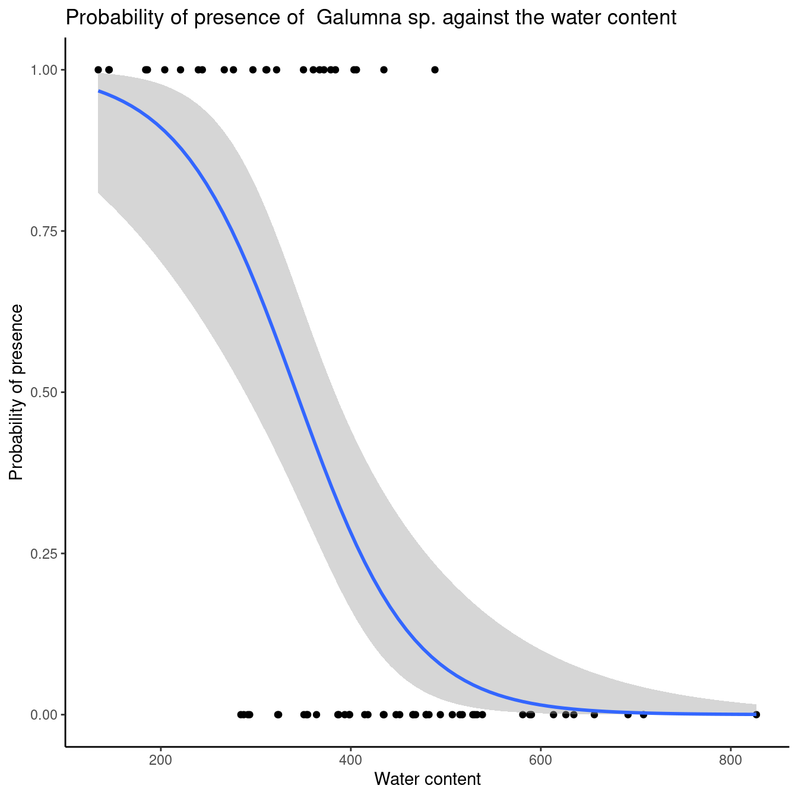

Chapter 8 Binomial GLMs (Bernouilli)
We’ve already seen that binary variables are not normally distributed (i.e.
we see a peak at 0 and a peak at 1 and nothing in between). Like we have
seen in the previous section, the Bernoulli distribution is well suited
for binary response variables. The mean of this distribution is the
probability \(p\) of observing an outcome and the variance is \(p/(1 - p)\). The \((1 - p)\) term represents the probability of not observing
an outcome. In R, we specify the distribution with the family
argument. For the logistic regression, we code it as:
family="binomial". Remember that the Bernoulli distribution is a
special case of the binomial distribution when the number of repetitions
is 1: R will “understand” that it is a Bernoulli distribution.
When predicting the probability of observing some phenomenon \(Y\), which is a binary variable, the expected values should be bound between 0 and 1: that’s the range of a probability value! If we use a basic linear model to relate a binary response variable to various explanatory variables, we might obtain fitted values outside of the \([0,1]\) range, which is nonsensical.
The following example will help you understand why a basic linear model is inappropriate here. The next subsection will show you how to avoid this problem with a link function. Briefly, a link function is used to linearize the relationship between predicted values of the response variable and the linear predictor (see next subsection).
model.lm <- lm(pa ~ WatrCont + Topo, data = mites)
# Let's get the expected values for the response variable.
fitted(model.lm)## 1 2 3 4 5 6
## 0.66647889 0.53692818 0.63347146 0.65064083 0.88992555 0.72554642
## 7 8 9 10 11 12
## 0.62243838 0.44918156 0.38197312 0.86452345 0.65216882 0.58115232
## 13 14 15 16 17 18
## 0.82937368 0.49091140 0.32085505 0.70975427 0.74788803 0.77927339
## 19 20 21 22 23 24
## 0.27006616 0.97936848 0.92066821 0.91783725 0.59213949 0.75609015
## 25 26 27 28 29 30
## 0.40830867 0.45469271 0.97998058 0.65973050 0.70784146 0.24024164
## 31 32 33 34 35 36
## 0.44598561 0.42241754 0.26475620 0.29565189 0.41782680 0.21776232
## 37 38 39 40 41 42
## 0.25508504 0.04877715 -0.20118869 0.24807651 0.14103573 0.26617933
## 43 44 45 46 47 48
## -0.03165263 -0.22623884 0.03336756 0.16659086 0.36168204 0.08179987
## 49 50 51 52 53 54
## 0.30060989 0.19286520 0.14544285 -0.04279283 0.22290395 0.04560953
## 55 56 57 58 59 60
## 0.17240580 0.04198285 -0.08121733 0.31664687 -0.14695674 0.14463181
## 61 62 63 64 65 66
## -0.10106464 -0.11390341 0.11942865 0.19182463 0.46870977 0.06957320
## 67 68 69 70
## -0.40803217 -0.04559318 0.46895461 0.41060630# Some values are lower than 0, which does not make sense for a
# logistic regression. Let’s try the same model with a binomial
# distribution instead.
model.glm <- glm(pa ~ WatrCont + Topo,
data = mites,
family = "binomial")
# Notice the "family" argument to specify the distribution.
fitted(model.glm)## 1 2 3 4 5 6
## 0.7346594257 0.4206031345 0.6631394056 0.7015590344 0.9653549812 0.8359993456
## 7 8 9 10 11 12
## 0.6372174958 0.5611742138 0.3897035615 0.9554194818 0.9124133201 0.5341181089
## 13 14 15 16 17 18
## 0.9371232991 0.6630994614 0.2534848511 0.8123833970 0.8652527310 0.8987976705
## 19 20 21 22 23 24
## 0.1672936363 0.9859583431 0.9745439489 0.9738080708 0.5622303983 0.8748321042
## 25 26 27 28 29 30
## 0.4560079466 0.2368433083 0.9860456411 0.7208455080 0.8093521595 0.1286310583
## 31 32 33 34 35 36
## 0.2209673461 0.4923424344 0.1597888373 0.2074205123 0.4804923276 0.1047615219
## 37 38 39 40 41 42
## 0.1468234813 0.0200046339 0.0015397957 0.1379815251 0.0502950337 0.1617730592
## 43 44 45 46 47 48
## 0.0088128566 0.0011890438 0.0171102995 0.0645145152 0.3411366744 0.0279131027
## 49 50 51 52 53 54
## 0.2159692960 0.0829690298 0.0525153673 0.0078621097 0.1098500760 0.0193729227
## 55 56 57 58 59 60
## 0.0682372458 0.0186736500 0.0052993359 0.2453448032 0.0026936317 0.0520999273
## 61 62 63 64 65 66
## 0.0043209522 0.0037861341 0.0406398167 0.0821545812 0.2640115440 0.0246819529
## 67 68 69 70
## 0.0001818862 0.0076395774 0.2645034420 0.16443067468.1 The link function
To move away from the traditional linear model and to avoid its biases, we need to specify two things when using a logistic regression: a distribution for the residuals of the model and a link function for the expected values. We already presented the Bernoulli distribution in the previous section so let’s have a look at what the link function is.
In the case of a simple linear model of a normally distributed continuous response variable, the following equation gives the expected values:
\[ \mu = X\beta \]
where \(\mu\) is the expected value of the response variable, \(X\) is the
model matrix (i.e. representing your data) and \(\beta\) corresponds to the
parameters we estimate from the data (i.e. the intercept and the
slope). The right-hand side of this equation is called the linear
predictor. In mathematical terms, it is the matrix product of the model
matrix \(X\) of a statistical model and the vector of estimated parameters
\(\beta\). Let’s have a look at this in R:
## Plant Type Treatment conc uptake
## 1 Qn1 Quebec nonchilled 95 16.0
## 2 Qn1 Quebec nonchilled 175 30.4
## 3 Qn1 Quebec nonchilled 250 34.8
## 4 Qn1 Quebec nonchilled 350 37.2
## 5 Qn1 Quebec nonchilled 500 35.3
## 6 Qn1 Quebec nonchilled 675 39.2Build a linear model of plant CO2 uptake as a function of CO2 ambient concentration.
# Build the model
model.CO2 <- lm(uptake ~ conc, data = CO2)
# Extract the design matrix of the model
X <- model.matrix(model.CO2)
# And the estimated coefficients.
B <- model.CO2$coefficients
# Let’s multiply both X and B matrices to obtain the linear predictor.
# The "%*%" symbol indicates that it is a matrix product.
XB <- X %*% B
# Compare the values of XB to the values obtained with the predict() function.
# All statements should be TRUE.
# We use the round() function so that all elements have 5 digits.
round(fitted(model.CO2), digits = 5) == round(XB, digits = 5)## [,1]
## 1 TRUE
## 2 TRUE
## 3 TRUE
## 4 TRUE
## 5 TRUE
## 6 TRUE
## 7 TRUE
## 8 TRUE
## 9 TRUE
....When using a simple linear model with a normally distributed response variable, the linear predictor is directly equal to the expected values of the model. But, what if our response variable is not normally distributed? If that is the case, we have to use a transformation on the expected values, i.e. a link function. A link function can be understood as a transformation of the expected values so that it can be linearly related to the linear predictor:
\[g(\mu) = X\beta\]
where \(g(\mu)\) is the link function for the expected values. This allows us to relax the normality assumption. In the case of a binary response variable, the link function is called the logit function and is given by:
\[logit(\mu) = log (\mu / 1-\mu) = X\beta\]
where \(\mu\) represents expected values (i.e. the probability that Y = 1 because we observed the presence of a species, disease, success, or some other event). The ratio \(\mu / 1-\mu\) represents the odds that some outcome occured and it transforms the expected values into continuous values from 0 to infinity. If we have a 0.8 probability of observing species X, then our odds are 4 times more likely to observe the species than to not observe it: 0.8/(1-0.8) = 4. The log transformation, called the log odds, allows values to be spread across -infinity to infinity. Hence, the logit function took the expected values of a model and transformed them into continuous values without boundaries. The expected values can now be directly related to a linear predictor. This is why we still call this model a generalized linear model even though the plot of our response variable as a function of some explanatory variable doesn’t look like a “straight line”!
Let’s build a regression model of the presence/absence of a mite species (Galumna sp.) as a function of water content and topography. To do this, we need to use the glm() function and specify the family argument.
logit.reg <- glm(pa ~ WatrCont + Topo,
data = mites,
family = binomial(link = "logit"))
# The logit function is the default for the binomial distribution,
# so it is not necessary to include it in the "family" argument:
logit.reg <- glm(pa ~ WatrCont + Topo,
data = mites,
family = binomial)
summary(logit.reg)##
## Call:
## glm(formula = pa ~ WatrCont + Topo, family = binomial, data = mites)
##
## Deviance Residuals:
## Min 1Q Median 3Q Max
## -2.0387 -0.5589 -0.1594 0.4112 2.0252
##
## Coefficients:
## Estimate Std. Error z value Pr(>|z|)
## (Intercept) 4.464402 1.670622 2.672 0.007533 **
## WatrCont -0.015813 0.004535 -3.487 0.000489 ***
## TopoHummock 2.090757 0.735348 2.843 0.004466 **
## ---
## Signif. codes: 0 '***' 0.001 '**' 0.01 '*' 0.05 '.' 0.1 ' ' 1
##
## (Dispersion parameter for binomial family taken to be 1)
##
## Null deviance: 91.246 on 69 degrees of freedom
## Residual deviance: 48.762 on 67 degrees of freedom
## AIC: 54.762
##
## Number of Fisher Scoring iterations: 68.2 Interpreting the output of a logistic regression
The output of the previous logistic regression indicates that both water
content and topography are significant, but how do we interpret the
slope coefficients? Remember that we applied a transformation on our
expected values (i.e. the probability that Y = 1) so we have to use a
reverse function to properly interpret the results. We can use the
natural exponential function ex to obtain the odds of probability of
success for each explanatory variable.
##
## Call: glm(formula = pa ~ WatrCont + Topo, family = binomial, data = mites)
##
## Coefficients:
## (Intercept) WatrCont TopoHummock
## 4.46440 -0.01581 2.09076
##
## Degrees of Freedom: 69 Total (i.e. Null); 67 Residual
## Null Deviance: 91.25
## Residual Deviance: 48.76 AIC: 54.76How to obtain the odds of the slope? Use the “exp()” function to put the coefficients back on the odds scale. Mathematically, this line of code corresponds to: exp(model coefficients) = exp(log(μ / (1 - μ)) = u / (1 - μ).
This corresponds to an odds ratio!
## WatrCont
## 0.9843118To obtain confidence intervals on the odds scale:
## 2.5 % 97.5 %
## 0.9741887 0.9919435Note that the odds values here are considered when all other parameters are kept constant. The topography parameter value is 8.09. It means that the probability of observing Galumna sp. is 8.09 times more likely when the topography is hummock compared to blanket.
When the odds value is smaller than 1, interpretation is a little bit more complicated. When this is the case, we have to take the inverse value (i.e. 1 divided by the odds) to facilitate interpretation. The interpretation is then how LESS likely it is to observe the event of interest. For water content, the odds is 0.984. The inverse is 1 / 0.984 = 1.0159. This means that a one-unit increase in water content decreases the likelihood of observing Galumna sp. by 1.0159. We can also substract 1 from the odds value to obtain a percentage: (1.0159 - 1) * 100 = 1.59% decrease in probability of observing Galumna sp. with a one-unit increase in water content. To convince ourselves that it is an appropriate interpretation, we can plot the presence of Galumna sp. as a function of water content. We see that, on average, Galumna sp. presence is higher at lower water content than its “absence”.

When the parameter estimate is between 0 and 1 on the odds scales, it indicates a negative relationship between the response variable and the explanatory variable. If the parameter is greater than 1, it indicates a positive relationship between the response variable and the explanatory variable. If the confidence interval includes 1, it indicates that the variable is not significant. Remember that a value of 1 on the odds scale means that the probability of Y = 1 is the same as the probability of Y = 0 (i.e. when p = 0.5, 0.5/(1-0.5) = 1).
If you want to obtain the probabilities instead of the odds for each explanatory variable, the inverse logit function is what you need:
logit-1 = 1/(1+1/exp(x))
where x is the parameter to transform from log odds to the probability
scale. The parameter estimate of topography in our logit.reg model is
2.091, which is on the log odds scale. So, the probability value is
given by:
1/(1+1/exp(2.091)) = 0.89 which is the same as 1/(1+1/8.09). Remember that the value 8.09 is on the odds scale. We have a 0.89 probability of observing Galumna sp. when the topography is Hummock.
Let’s calculate this probability without using the exp() function:
First we start with our odds ratio for topography from the logit.reg model: µ/ (1 - µ) = 8.09
Let’s rearrange this to isolate µ µ = 8.09(1 - µ) = 8.09 - 8.09µ 8.09µ + µ = 8.09 µ(8.09 + 1) = 8.09 µ = 8.09 / (8.09 + 1) µ = 1 / (1 + (1 / 8.09)) = 0.89
We obtained the same result!
8.3 Predictive power and goodness-of-fit
An easy and intuitive way to evaluate the predictive power of your model
is to compare its deviance to the deviance of a null model. Deviance can
be understood as a generalisation of the residual sum of squares when
models are estimated by maximum likelihood (i.e. it is how parameters
are estimated in GLM). This allows us to compute a pseudo-R2
statistic, which is analogous to the coefficient of determination R2
in ordinary least square regression (i.e. the basic method for linear
models). The null model is a model without any explanatory variable. Its
notation in R is:
null.model <- glm(Response.variable ~ 1, family = binomial). The
generic formula to compute a pseudo-R2 is given by:
Pseudo-R2 = (null deviance – residual deviance) / null deviance
where “null deviance” is the deviance of the null model and “residual deviance” is the deviance of the model of interest. The difference is divided by the null deviance so that the result is bound between 0 and 1.
## [1] "aic" "boundary" "call"
## [4] "coefficients" "contrasts" "control"
## [7] "converged" "data" "deviance"
## [10] "df.null" "df.residual" "effects"
## [13] "family" "fitted.values" "formula"
## [16] "iter" "linear.predictors" "method"
## [19] "model" "null.deviance" "offset"
## [22] "prior.weights" "qr" "R"
## [25] "rank" "residuals" "terms"
## [28] "weights" "xlevels" "y"## [1] 0.4655937Hence, the model explains 46.6% of the variability in the data.
An adjusted McFadden’s pseudo-R2, which penalizes for the number of predictors, can be calculated as below:
\[ R^2_{adj} = \frac{null~deviance - residual~deviance}{null~deviance} \] \[ R^2_{adj} = 1 - \frac{logL(M)-K}{logL(M_{null})} \]
where K corresponds to the additional number of predictors in relation to the null model.
The goodness-of-fit of logistic regression models can be expressed by variants of \(pseudo-R^2\) statistics, such as Maddala (1983) or Cragg and Uhler (1970) measures.
When talking about logistic regressions, low R2 values are common.
The R function DescTools::PseudoR2() makes it possible to calculate
many types of \(pseudo-R^2\). By specifying which = all, calculate all
of them at once.
logit.reg <- glm(pa ~ WatrCont + Topo,
data = mites, family = binomial(link = "logit"))
DescTools::PseudoR2(logit.reg, which = "all")## McFadden McFaddenAdj CoxSnell Nagelkerke AldrichNelson
## 0.4655937 0.3998373 0.4549662 0.6245898 0.3776866
## VeallZimmermann Efron McKelveyZavoina Tjur AIC
## 0.6674318 0.5024101 0.7064093 0.5114661 54.7623962
## BIC logLik logLik0 G2
## 61.5078819 -24.3811981 -45.6229593 42.48352248.3.1 Challenge 2
Assess goodness-of-fit and predictive power of the model.bact2 model. How can you improve the predictive power of this model?
8.3.2 Challenge 2: Solution
null.d <- model.bact2$null.deviance
resid.d <- model.bact2$deviance
bact.pseudoR2 <- (null.d - resid.d) / null.d
bact.pseudoR2## [1] 0.0624257This is very low!
Adding informative explanatory variables could increase the explanatory power of the model.
But, do not be afraid of non-significant results!
8.4 Plotting results
Once we’ve created a model and verified its validity, we can plot the
results to show how the response variable is related to some explanatory
variables. One way to graphically summarise the data is by plotting both
the response variable and the expected values as a function of some
predictor. Here is an example with the ggplot2 package. See workshop
3 for more information on this package.
ggplot(mites,
aes(x = WatrCont, y = pa)) +
geom_point() +
stat_smooth(method = "glm", family= "binomial", se = FALSE) +
labs(x = "Water content",
y = "Probability of presence",
title = "Probability of presence of Galumna sp. as a function of water content") +
theme_classic() # applies a simplified plot theme